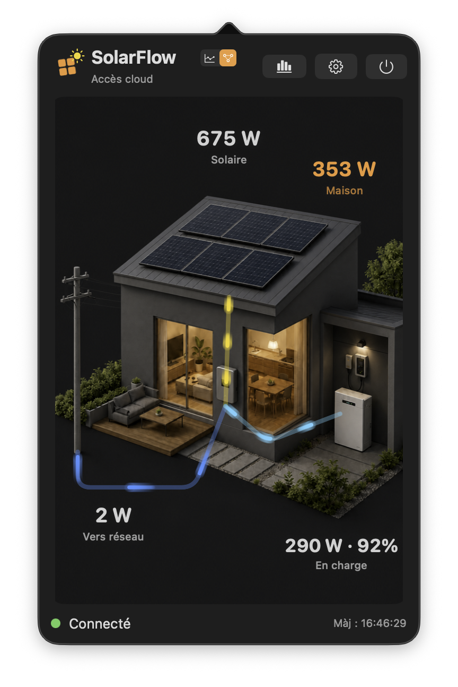
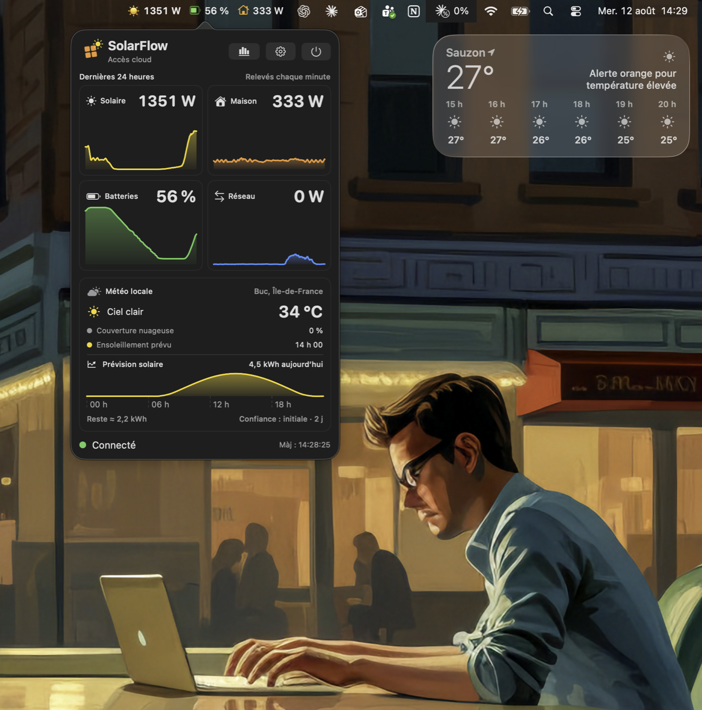
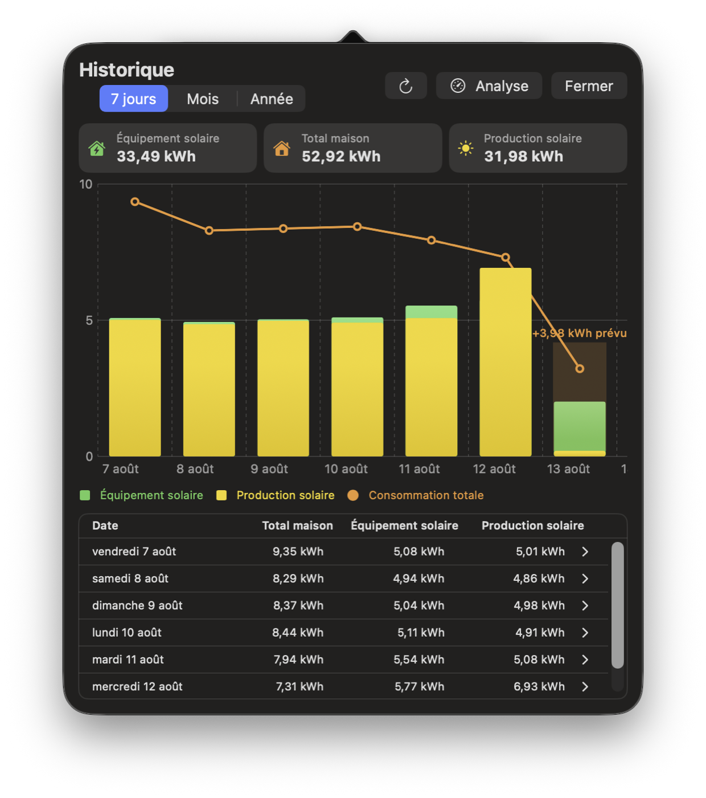
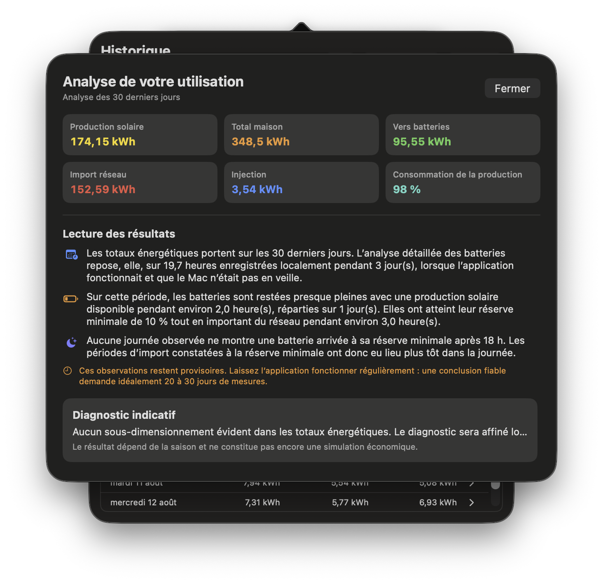
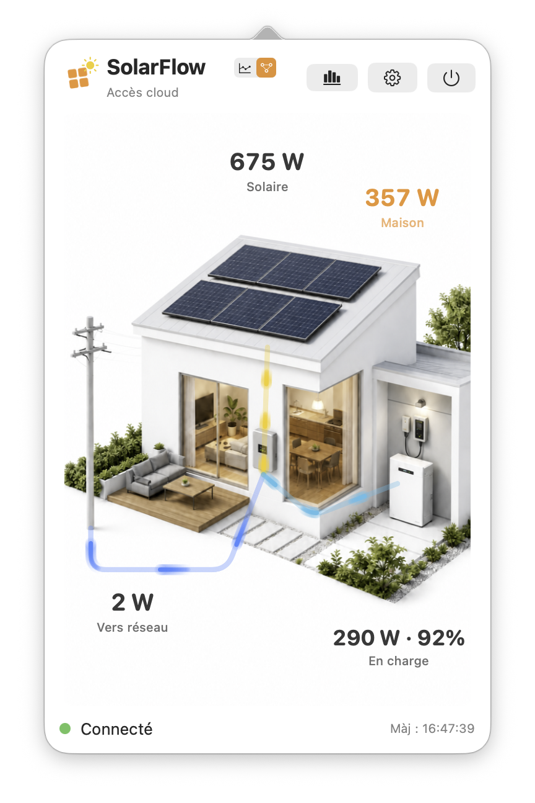
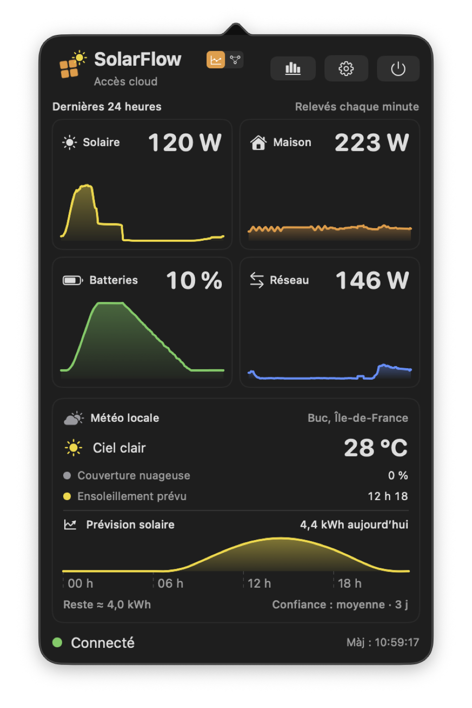
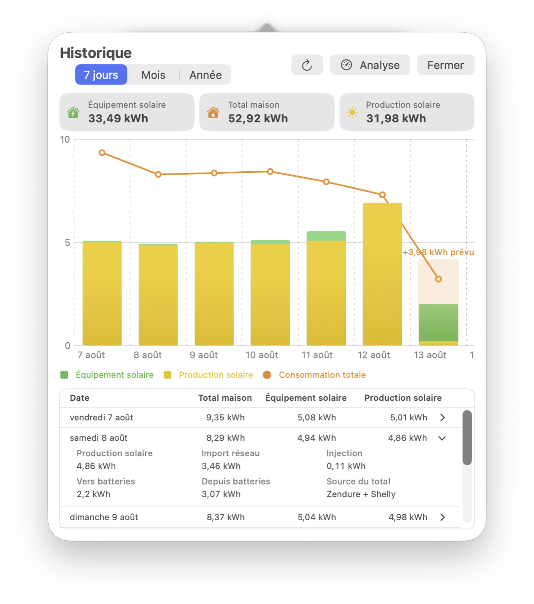
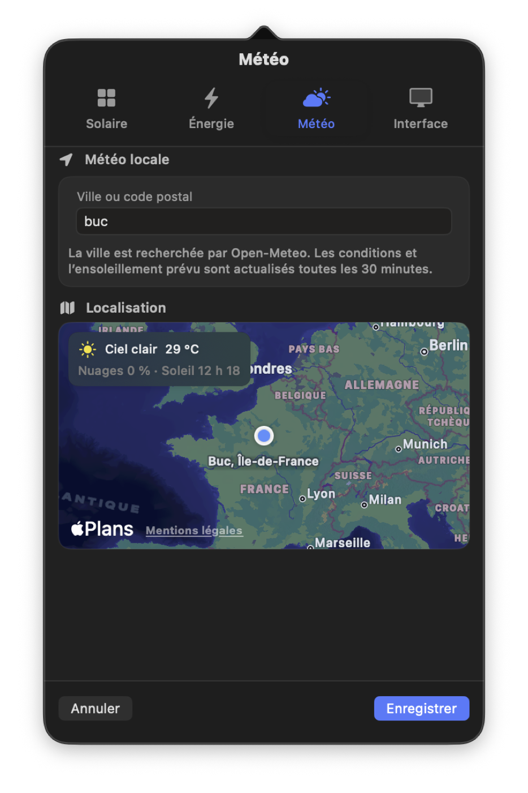

Production solaire
Suivez instantanément la puissance produite par vos deux SolarFlow et son évolution sur 24 heures.
SolarFlow Monitor réunit vos panneaux Zendure, vos batteries, votre consommation Shelly et la météo dans une app discrète, directement dans la barre des menus de votre Mac.
macOS 15 ou ultérieur · Apple Silicon · Signée et notarifiée par Apple · Mises à jour intégrées

Les informations essentielles sont mises à jour chaque minute, sans ouvrir plusieurs applications ni chercher dans des menus complexes.
Suivez instantanément la puissance produite par vos deux SolarFlow et son évolution sur 24 heures.
Visualisez le niveau moyen, les phases de charge et de décharge ainsi que l’énergie stockée.
Avec Shelly, mesurez la consommation totale, l’import réseau et l’injection vers le réseau.
Anticipez la production du jour grâce à Open‑Meteo et à l’historique réel de votre installation.
SolarFlow Monitor détecte les contrôleurs SolarFlow associés à votre compte et additionne automatiquement la puissance de leurs panneaux, de leurs sorties et de leurs batteries.
Les batteries et modules satellites sont pris en compte à travers leur contrôleur SolarFlow. Les mesures en direct sont agrégées pour tous les appareils détectés ; la disponibilité et le niveau de détail de l’historique Zendure peuvent varier selon le modèle, le firmware et le compte.

Production, charge moyenne des batteries et consommation actuelle restent visibles sans encombrer votre bureau. Ouvrez le panneau pour accéder aux courbes détaillées.
Comparez l’énergie solaire, la consommation totale de la maison et la production des panneaux sur 7 jours, un mois ou une année. La prévision du jour complète automatiquement l’histogramme.


L’application réunit les données Zendure et Shelly des 30 derniers jours pour expliquer simplement la manière dont votre production solaire, votre maison, le réseau et vos batteries interagissent.
SolarFlow Monitor s’adapte automatiquement à l’apparence de votre Mac. Vous pouvez aussi imposer le mode clair ou sombre depuis l’onglet Application.

Passez de la vue des flux aux courbes, explorez chaque journée et configurez précisément la météo locale.



L’application est gratuite, signée et notarifiée par Apple. Vos identifiants sont conservés dans le trousseau sécurisé de macOS.
SolarFlow Monitor est gratuit et conçu pour macOS.